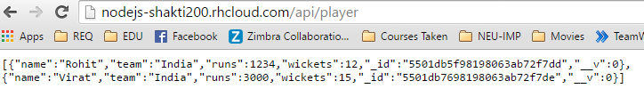
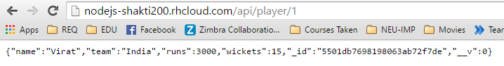

RockMongo on openshift. It behaves as a client for the
mongoDb to view the table structures.
var mongoose = require('mongoose');
var mongoDBString = process.env.OPENSHIFT_MONGODB_DB_URL || 'mongodb://localhost/cs5610';
mongoose.connect(mongoDBString);
Added following code in the server file to allow Cross Origin Resource Sharing.
var cors = require('cors');
app.use(cors());


app.get("/api/player", function (req, res) {
PlayerModel.find(function (err, data) {
res.json(data);
});
})
//get a single player
app.get("/api/player/1", function (req, res) {
PlayerModel.find(function (err, data) {
res.json(data[0]);
});
})